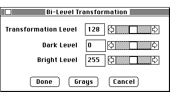

Distributed By: Virtual Labs
Bi-Level Transformation Dialog Box:
PATH...{Digitize Image}:Image Menu::Bi-Level Transformation

Bi-Level Transformation Dialog Box
This Dialog box may be used to convert the current image into a black and
white bit map image. The sliding cursors may be used to set:
- Digitize Image:Configure Video Dialog:Transformation Level;: The threshold
grey value. Values less than this are set to black, values greater than
or equal are set to white.
- Use the next two levels to set the brightness and contrast..
- Clicking on Done will effect a bit map of the picture to be implemented.
Clicking on Grays changes the LUT to reflect the new values and clicking
on Cancel returns the image to its previous state.
Author: J.ames T.
Stanley
 Desktop
Manual:Dialog Boxes
Desktop
Manual:Dialog Boxes
Distributed By: Virtual Labs
Last Updated:1/12/96 Sat, Apr 27, 1996